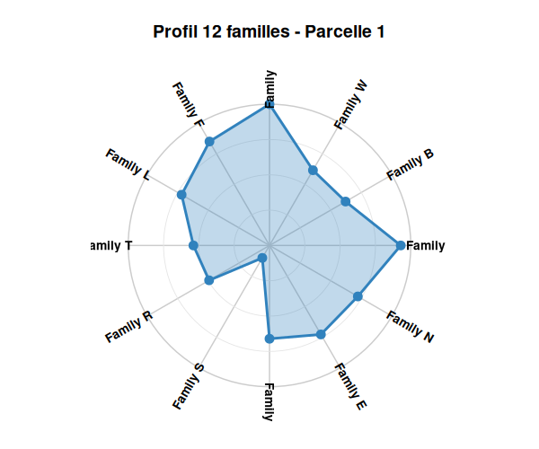
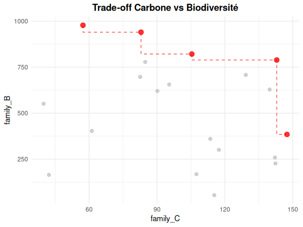

Analyse systémique de territoires forestiers selon la méthode Nemeton
nemeton est un package R pour l’analyse intégrée d’écosystèmes forestiers. Il calcule, normalise et visualise des indicateurs biophysiques multi-famille pour la gestion forestière durable.
Fonctionnalités
12 familles d’indicateurs avec 29 sous-indicateurs :
| Famille | Description | Indicateurs |
|---|---|---|
| C | Carbone & Vitalité | C1-C2 |
| B | Biodiversité | B1-B3 |
| W | Eau & Régulation | W1-W3 |
| A | Air & Microclimat | A1-A2 |
| F | Fertilité Sols | F1-F2 |
| L | Paysage | L1-L2 |
| T | Temporel | T1-T2 |
| R | Risques & Résilience | R1-R3 |
| S | Social & Usages | S1-S3 |
| P | Production & Économie | P1-P3 |
| E | Énergie & Climat | E1-E2 |
| N | Naturalité | N1-N3 |
Outils d’analyse : Pareto, clustering, trade-offs, radar 12-axes, corrélations.
Installation
# install.packages("remotes")
remotes::install_github("pobsteta/nemeton")Prérequis : R >= 4.1.0, sf, terra, ggplot2
Quick Start
library(nemeton)
# Charger le dataset de démonstration (20 parcelles, 12 familles)
data(massif_demo_units)
# Visualiser le profil radar d'une parcelle
nemeton_radar(massif_demo_units, unit_id = 1, mode = "family")
# Identifier les parcelles Pareto-optimales
pareto <- identify_pareto_optimal(
massif_demo_units,
objectives = c("family_C", "family_B"),
maximize = c(TRUE, TRUE)
)
# Trade-offs avec frontière de Pareto
plot_tradeoff(pareto, x = "family_C", y = "family_B", pareto_frontier = TRUE)
Workflow avec vos données
library(nemeton)
library(sf)
# 1. Créer les unités d'analyse
units <- nemeton_units("parcelles.gpkg")
# 2. Cataloguer les couches spatiales
layers <- nemeton_layers(
rasters = list(biomass = "biomass.tif", dem = "dem.tif"),
vectors = list(roads = "roads.gpkg", water = "water.gpkg")
)
# 3. Calculer les indicateurs
results <- nemeton_compute(units, layers, indicators = "all")
# 4. Normaliser (échelle 0-100)
normalized <- normalize_indicators(results, method = "minmax")
# 5. Créer un indice composite
health <- create_composite_index(
normalized,
indicators = c("carbon_norm", "biodiversity_norm", "water_norm"),
name = "ecosystem_health"
)
# 6. Visualiser
plot_indicators_map(health, indicators = "ecosystem_health", palette = "RdYlGn")Licence
MIT - Voir LICENSE
Citation
Obstétar, P. (2026). nemeton: Systemic Forest Analysis Using the Nemeton Method.
R package version 0.9.0. https://github.com/pobsteta/nemetonDéveloppé avec ❤️ et Claude Code